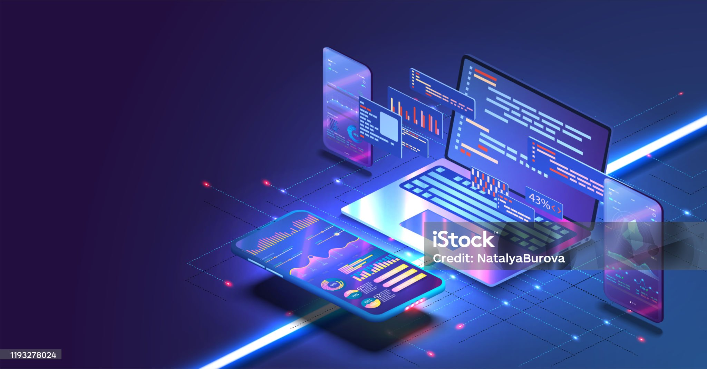

Tu mejor elección
QUIENES SOMOS
TS Administración de Sistemas Informáticos en Red (ASIR) |
TS Desarrollo de Aplicaciones Multiplataforma (DAM) |
TS Desarrollo de Aplicaciones Web (DAW) |
|  | ||
Con el ciclo de FP superior en Administración de Sistemas Informáticos en Red (ASIR)serás uno de los profesionales más demandados con tu especialización en hacking ético, pentesting y otros aspectos de la ciberseguridad que dominarás. |
Con el ciclo de FP superior en Desarrollo de aplicaciones Multiplataforma (DAM)trabajarás en entornos web, dipositivos móviles, la nube... y con diferentes lenguajes de programación. Dominarás el proceso de diseño y las tareas de supervisión en la creación de apps. |
Con el ciclo de FP superior en Desarrollo de Aplicaciones Web (DAW)aprenderás a desarrollar y mantener páginas y apps web de diferentes modelos y con finalidades distintas. Te entrenarás en lenguajes de programación, en base de datos, en arquitectura y en diseño. Serás un especialista en MEAN & Full Stack. |
|
|
|
TITULACIONES
PROFESORADO
HORARIOS
DONDE ESTAMOS